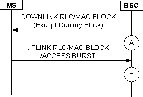

Figure 1 shows the process that the BSC sends and receives an RLC/MAC data block on the TBF. In a granularity period, the number of RLC data blocks used on PDCH is incremented by one when
the BSC sends the RLC/MAC data blocks (excluding the dummy data blocks) or receives the RLC/MAC data blocks or access bursts on the PDCH. When the PBCCH is supported in the cell, the statistics results of this measurement include also the system information
sent on the PBCCH, the RLC/MAC control blocks such as the paging or assignment messages sent on the PCCCH, and received random access requests. Measurement point A in the following figure shows that the BSC sends an RLC/MAC data block to the MS. Measurement
point B in figure
Figure 1 shows that the BSC receives an RLC/MAC data block from the MS.
Figure 1 Number of RLC Data Blocks Used on PDCH
